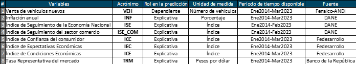

Chapter 2 Introducción
El análisis de series de tiempo de venta de vehículos puede proporcionar información valiosa sobre las tendencias y patrones en la demanda de vehículos. Aquí hay algunos pasos generales que se pueden seguir para analizar una serie de tiempo de venta de vehículos:
• Recopilar datos: Lo primero que se debe hacer es recopilar datos históricos sobre las ventas de vehículos en un período de tiempo determinado. Estos datos pueden incluir el número de vehículos vendidos por mes, trimestre, año, región geográfica, marca y modelo, entre otros.
• Visualizar los datos: Una vez que se han recopilado los datos, es importante visualizarlos en una gráfica de línea o en un diagrama de puntos para identificar patrones y tendencias. La visualización de los datos puede proporcionar una visión general de la serie de tiempo, permitiendo identificar los picos y los valles y los cambios en la tendencia a lo largo del tiempo.
• Análisis de estacionalidad: En el análisis de series de tiempo, es común que exista un patrón estacional en los datos, lo que significa que las ventas pueden ser más altas en ciertos meses o épocas del año. Identificar y modelar la estacionalidad puede ayudar a comprender las fluctuaciones en las ventas y mejorar las predicciones futuras.
• Identificar tendencias y patrones: Además de la estacionalidad, es importante identificar cualquier tendencia o patrón en los datos. Por ejemplo, puede haber una tendencia general de aumento o disminución de las ventas de vehículos en el tiempo, o puede haber patrones recurrentes a largo plazo que afectan las ventas.
• Realizar análisis de causalidad: El análisis de causalidad implica identificar los factores que pueden estar contribuyendo a las tendencias y patrones en los datos. Por ejemplo, pueden existir factores económicos, demográficos o de marketing que estén influyendo en la demanda de vehículos.
• Modelar y predecir: Finalmente, se puede utilizar la información obtenida del análisis de series de tiempo para modelar y predecir las ventas futuras de vehículos. Esto puede ayudar a las empresas a planificar su producción y comercialización y ajustar sus estrategias de negocio para maximizar las ventas y minimizar los costos.
La información que se utilizará en el transcurso de la asignatura es de acceso público, ya que es generada por entidades como el DANE, Banco de la República, Fedesarrollo, Fenalco y la ANDI. En la tabla 1 se describen las variables que se incluyen en el dataset de análisis.
2.1 Descripción de las variables del dataset elegido

| …1 | VEH | INF | ISE | ISE_COM | ICC | IEC | ICE | TRM |
|---|---|---|---|---|---|---|---|---|
| 2014-01-01 | 20115 | 2.13 | 89.38968 | 86.54366 | 27.3 | 28.2 | 25.9 | 1960.41 |
| 2014-02-01 | 23744 | 2.32 | 92.91968 | 90.38523 | 15.7 | 14.8 | 17.2 | 2040.51 |
| 2014-03-01 | 24075 | 2.51 | 95.65122 | 91.39628 | 18.5 | 18.0 | 19.3 | 2022.19 |
| 2014-04-01 | 26128 | 2.72 | 92.32801 | 95.26309 | 18.5 | 16.2 | 21.8 | 1939.27 |
| 2014-05-01 | 26865 | 2.93 | 95.56390 | 93.78647 | 23.9 | 22.7 | 25.8 | 1915.46 |
| 2014-06-01 | 22974 | 2.79 | 95.43544 | 94.05604 | 26.5 | 28.6 | 23.4 | 1888.10 |
| 2014-07-01 | 27650 | 2.89 | 97.57987 | 100.33581 | 26.6 | 25.9 | 27.6 | 1858.40 |
| 2014-08-01 | 27465 | 3.02 | 97.52460 | 95.69554 | 20.5 | 16.0 | 27.2 | 1899.07 |
| 2014-09-01 | 29528 | 2.86 | 98.39200 | 94.23638 | 17.5 | 16.2 | 19.4 | 1971.34 |
| 2014-10-01 | 31386 | 3.29 | 98.34370 | 97.17163 | 21.7 | 20.9 | 22.8 | 2047.03 |
| 2014-11-01 | 25700 | 3.65 | 101.97067 | 102.50636 | 24.5 | 24.2 | 24.9 | 2127.25 |
| 2014-12-01 | 40393 | 3.66 | 109.07255 | 119.93755 | 22.4 | 21.8 | 23.3 | 2344.23 |
| 2015-01-01 | 21241 | 3.82 | 92.03554 | 90.26399 | 17.9 | 18.1 | 17.7 | 2397.69 |
| 2015-02-01 | 22871 | 4.36 | 95.19647 | 92.84614 | 14.0 | 14.0 | 13.9 | 2420.38 |
| 2015-03-01 | 24671 | 4.56 | 98.60194 | 94.88460 | 2.3 | 0.3 | 5.2 | 2586.58 |
| 2015-04-01 | 21863 | 4.64 | 95.51865 | 96.84447 | 8.2 | 8.0 | 8.5 | 2495.36 |
| 2015-05-01 | 22525 | 4.41 | 98.91425 | 96.47525 | 13.7 | 13.8 | 13.5 | 2439.09 |
| 2015-06-01 | 22476 | 4.42 | 99.30745 | 97.80433 | 14.7 | 11.2 | 20.1 | 2554.94 |
| 2015-07-01 | 26595 | 4.46 | 102.02717 | 103.78699 | 2.6 | 2.2 | 3.3 | 2731.90 |
| 2015-08-01 | 23208 | 4.74 | 101.20712 | 99.29043 | -0.4 | 4.7 | -8.0 | 3023.29 |
2.2 Justificación
Para el desarrollo de la asignatura “Análisis de series temporales”, se trabajarán con datos mensuales relacionados con consumo, específicamente en bienes durables, con el objetivo de identificar tendencias económicas, cambios en los patrones de gasto y la evolución del poder adquisitivo de los hogares colombianos. Para esto se pronosticará la venta de vehículos nuevos en Colombia, teniendo en cuenta su evolución histórica y posible relación con otras variables que influyen de forma directa e indirecta en su evolución.
Es importante resaltar que hacer un seguimiento activo a la venta de vehículos nuevos en el país cobra relevancia porque es una variable que aproxima el comportamiento del sector automotor y a su vez el consumo de los hogares, dos motores clave de la economía colombiana. El sector automotor, además, impulsa la innovación, la tecnología, la generación de empleo, la movilidad y el desarrollo de otros sectores económicos (a través de encadenamientos productivos).
El pronostico de esta variable permitirá que las empresas y tomadores de decisiones en el ámbito privado o público puedan identificar oportunidades de mercado y tomar decisiones estratégicas, como el lanzamiento de nuevos productos y servicios que satisfagan las necesidades y deseos de los consumidores y, diseñar programas y políticas que fomenten un consumo más sostenible y equitativo.